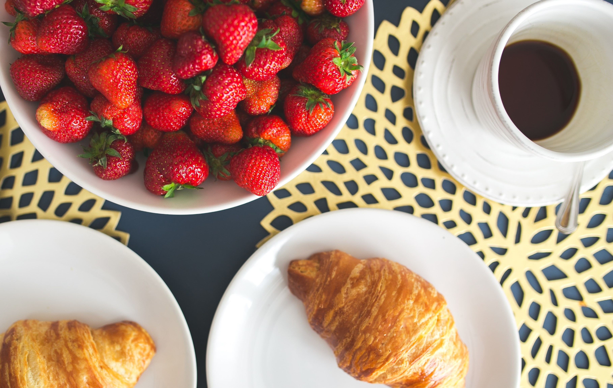
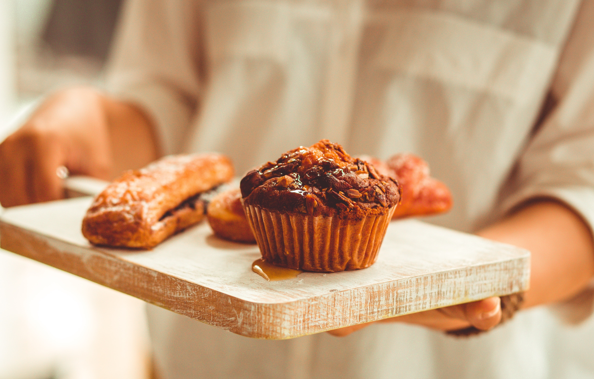

White Bakery
White Bakery racconta la cultura del bon cibo della tradizione americana.
Un luogo da frequentare in diversi momenti della giornata.



White Bakery racconta la cultura del bon cibo della tradizione americana.
Un luogo da frequentare in diversi momenti della giornata.
La storia di White Bakery è iniziata nel 2011 dall’esperienza professionale americana del suo fondatore, vissuta principalmente a Manhattan, cuore pulsante del mix culturale degli USA. Negli anni a seguire, con passione ed impegno quotidiano, sono stati aperti 9 locali in Abruzzo, Marche, Emilia Romagna e nel Lazio.
White Bakery è diventata nel tempo una realtà apprezzata e valorizzata dai clienti che vogliono respirare un’atmosfera magica e tornare indietro nel tempo all’America degli anni 40/50

Pureed strawberries are added to the creamy batter for this strawberry cheesecake with graham cracker crust. A light topping of sweetened sour cream is spread on the cake and then once chilled, it is topped with fresh strawberries for a sweet finish.

Each of our gourmet cheesecakes are prepared fresh the day before your order is to be delivered. We mix and bake every cheesecake individually with only quality ingredients to ensure the perfect blending of flavors. Each cheesecake is garnished with fresh fruit, cookies, or candy and real whipping cream! Truly a feast for the eyes as well as the taste buds.

Pureed strawberries are added to the creamy batter for this strawberry cheesecake with graham cracker crust. A light topping of sweetened sour cream is spread on the cake and then once chilled, it is topped with fresh strawberries for a sweet finish.

Each of our gourmet cheesecakes are prepared fresh the day before your order is to be delivered. We mix and bake every cheesecake individually with only quality ingredients to ensure the perfect blending of flavors. Each cheesecake is garnished with fresh fruit, cookies, or candy and real whipping cream! Truly a feast for the eyes as well as the taste buds.

Pureed strawberries are added to the creamy batter for this strawberry cheesecake with graham cracker crust. A light topping of sweetened sour cream is spread on the cake and then once chilled, it is topped with fresh strawberries for a sweet finish.

Each of our gourmet cheesecakes are prepared fresh the day before your order is to be delivered. We mix and bake every cheesecake individually with only quality ingredients to ensure the perfect blending of flavors. Each cheesecake is garnished with fresh fruit, cookies, or candy and real whipping cream! Truly a feast for the eyes as well as the taste buds.
Ufficio Amministrativo
c/o Centro Commerciale L’Arca
Fellini, 8
Spoltore (PE)
+39 085/9151517
info@whitebakery.it